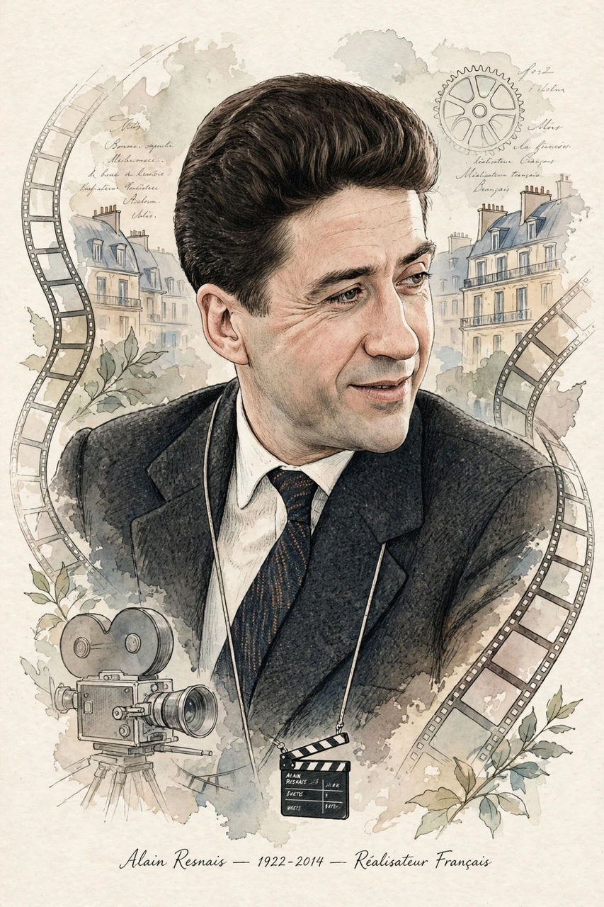

| Alain Resnais | |
|---|---|
 Resnais explored memory, time, and forgetting | |
| Born | 3 June 1922, Vannes, France |
| Died | 1 March 2014 (aged 91), Neuilly-sur-Seine, France |
| Occupation | Film director, editor |
| Known for | Hiroshima mon amour (1959), Last Year at Marienbad (1961), Night and Fog (1956) |
| Movement | Left Bank Group (associated with the New Wave) |
Alain Resnais (French: [alɛ̃ ʁɛnɛ]; 3 June 1922 – 1 March 2014) was a French film director and screenwriter whose career spanned more than six decades. Associated with the "Left Bank" group of filmmakers, he became famous for films that investigate memory, trauma, and time, collaborating with major literary figures such as Marguerite Duras, Alain Robbe-Grillet, and Jorge Semprún.
After training as an editor, Resnais made a series of acclaimed art documentaries in the 1950s, including Van Gogh (1948) and Night and Fog (1956), a meditation on the Nazi concentration camps that remains one of the most important films about the Holocaust.
His first feature, Hiroshima mon amour (1959), written by Marguerite Duras, intertwined a love affair in Hiroshima with memories of the war and was a landmark of modernist cinema. Last Year at Marienbad (1961), written by Robbe-Grillet, won the Golden Lion at Venice and became notorious for its enigmatic, dreamlike structure. Later works range from the political drama The War Is Over (1966) to musical and theatrical experiments such as Smoking/No Smoking (1993) and On connaît la chanson (1997).
Resnais worked until his death at 91; his final film, Life of Riley, premiered at Berlin weeks before he died. He is regarded as one of the great innovators of film form, whose influence extends across world art cinema.